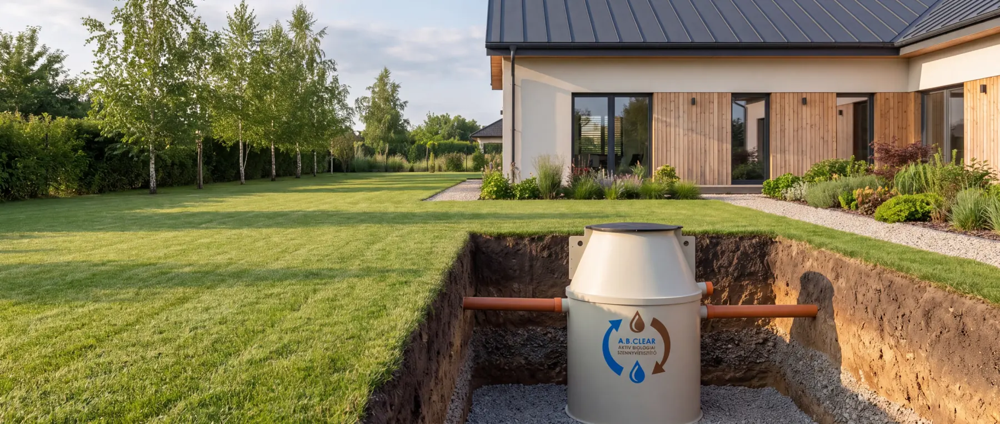

Biológiai szennyvíztisztítás
A biológiai szennyvíztisztító ugyanazon az elven működik, mint a városi szennyvíztisztító telepek: a tartályban élő baktériumkultúra lebontja a szennyvíz szerves anyagát, a folyamat végén pedig elszivárogtatható tisztított víz távozik. A teljes folyamat egyetlen, föld alá telepített tartályban zajlik, napi beavatkozás nélkül — áramellátás és rendszeres terhelés viszont kell hozzá.

A tisztítási folyamat
Hogyan működik
Négy szakasz, egyetlen tartályon belül. A folyamat folyamatos, a tulajdonosnak napi teendője nincs vele.
-
A szennyvíz beérkezik. A háztartásban keletkező teljes kommunális szennyvíz a berendezésbe kerül: a WC-ből érkező feketevíz és a mosásból, mosogatásból, tisztálkodásból származó szürkevíz is.
-
A biológiai tisztítás. A berendezésben élő baktériumkultúra lebontja a szennyvíz szerves anyagát. Levegőztetett és ülepítő szakaszok váltakoznak, így a szerves szennyeződés mellett a nitrogénformák egy része is eltávozik. A kultúra önfenntartó: sem adalékanyagra, sem utánpótlásra nincs szüksége.
-
Az iszap kezelése. A tisztítás során keletkező fölösiszap víztelenített, stabilizált formában, zsákban gyűlik — ezt a szabadalmaztatott iszapzsákos technológia teszi lehetővé. A zsák ürítése egyszerű művelet, a száradt iszap komposztálható.
-
A tisztított víz elvezetése. A tisztított víz gyökérzónás elszivárogtatással kerül vissza a környezetbe. Hogy ez az adott telken hogyan oldható meg, azt a talaj és a helyi előírások döntik el.
Alkalmasság
Kinek való — és mikor nem
Akkor jó választás, ha…
- állandó, folyamatos a használat (állandóan lakott családi ház);
- van áram a telken, vagy biztosan lesz;
- a kezelt víz elhelyezhető a telken belül (elszivárogtatás, gyökérzónás hasznosítás);
- fontos, hogy ne kelljen rendszeresen szippantani;
- kötött talajon is működő megoldás kell — a tisztítás itt a tartályban zajlik, nem a talajban.
Nem ez a megoldás, ha…
- nincs áram és nem is lesz. A tisztítást a levegőztetés tartja fenn, azt pedig a kompresszor — áram nélkül a rendszer nem üzemeltethető;
- ritka, szakaszos a használat (nyaraló, hétvégi ház). A baktériumkultúra rendszeres terhelést kíván; hosszú üresjárat után újra kell indulnia;
- a helyi előírás semmilyen talajba jutást nem enged (például vízbázisvédelmi terület). Ilyenkor a zárt tároló marad — azt nem mi gyártjuk, de megmondjuk, mit érdemes tisztázni;
- 50 fő feletti a terhelés. Ott nem házi berendezés kell, hanem méretezett rendszer.
Üzemeltetés
Amit a működésről érdemes tudni
-
Szippantás nélkül
A fölösiszap az iszapzsákban gyűlik, és komposztálható. A megoldás saját fejlesztés, több országban szabadalmaztatva.
-
Alacsony energiaigény
A levegőztetést egyetlen kompresszor végzi. Ez az egyetlen mozgó alkatrész a rendszerben.
-
Szaghatás és adalék nélkül
A folyamatos levegőztetés megakadályozza a rothadást, a baktériumkultúra pedig önfenntartó — tablettát, port, oltóanyagot nem kell adagolni.
-
A felszínen nem látható
A tartály teljes egészében a föld alatt van. A kertben csak az aknafedelek látszanak.
Műszaki adatok
Kapacitás, méretek, teljesítmény
Gyakori kérdések
Amit a leggyakrabban kérdeznek
Kell-e szippantani a biológiai szennyvíztisztítót?
Az iszapzsákos kialakításnál nem: a fölösiszap víztelenített formában, zsákban gyűlik, és komposztálható. Más biológiai rendszereknél időszakos iszapelszállítás jellemzően szükséges — ez technológiafüggő.
Mennyi áramot fogyaszt?
A levegőztetést egyetlen kompresszor végzi, ez a rendszer egyetlen mozgó alkatrésze. A pontos fogyasztás típusfüggő; a főoldal üzemeltetési szakasza háromfős háztartásra mutat összesített éves nagyságrendet.
Működik-e nyaralóban, időszakos használatnál?
Rendszeres terhelés nélkül nem ez a jó irány: a baktériumkultúra folyamatos szennyvízellátást kíván. Időszakos használatnál általában az oldómedencés megoldás illik jobban.
Hová kerül a tisztított víz?
Gyökérzónás elszivárogtatással a talajba. Hogy ez az adott ingatlanon megvalósítható-e, azt a talaj szikkasztóképessége, a talajvízszint és a helyi szabályozás dönti el — ez a leggyakoribb elakadási pont, ezért érdemes elsőként tisztázni.
Milyen engedély kell hozzá?
Háztartási méretben jellemzően a jegyzői (települési) eljárás az irányadó, nagyobb kibocsátásnál vízjogi engedély szükséges. A pontos eljárás a kapacitástól, a kibocsátás módjától és a helyi szabályozástól függ.